LINJUN WU, State Key Lab of CAD&CG, Zhejiang University, China
XIANGJUN TANG, State Key Lab of CAD&CG, Zhejiang University, China
JINGYUAN CONG, University of California San Diego, United States of America
HE WANG, UCL Centre for Artificial Intelligence, Department of Computer Science, University College London (UCL), United Kingdom
BO HU, Tencent Technology Co., Ltd., China
XU GONG, Tencent Technology Co., Ltd., China
SONGNAN LI, Tencent Technology Co., Ltd., China
YUCHEN LIAO, Tencent Technology Co., Ltd., China
YIQIAN WU, State Key Lab of CAD&CG, Zhejiang University, China
CHEN LIU, State Key Lab of CAD&CG, Zhejiang University, China
XIAOGANG JIN ∗ , State Key Lab of CAD&CG, Zhejiang University, China
Bird Gliding Style
"A person jumps high and performs a side kick in midair"
"A woman hops forward on
her left foot"
"A person walks forward, turns around and sits down"
Style Reference:
body postures resembling bird gliding
Fig. 1. A showcase of generated motions driven by the unsupervised style of bird gliding. Our method synthesizes motions by combining textual descriptions of desired content with style references characterized by the distinctive body postures and fluid dynamics of bird gliding. The resulting motions seamlessly integrate the style characteristics of the reference with the motion content conveyed by the textual input, demonstrating both creative adaptability and precise control.
∗ Corresponding author
Authors' Contact Information: Linjun Wu, State Key Lab of CAD&CG, Zhejiang University , Hangzhou, China, 12321232@zju.edu.cn; Xiangjun Tang, State Key Lab of CAD&CG, Zhejiang University , Hangzhou, China, xiangjun.tang@outlook.com; Jingyuan Cong, University of California San Diego , San Diego, United States of America, cjy6647@gmail.com; He Wang, UCL Centre for Artificial Intelligence, Department of Computer Science, University College London (UCL) , London, United Kingdom, he_wang@ucl.ac.uk; Bo Hu, Tencent Technology Co., Ltd., Shenzhen, China, corehu@ tencent.com; Xu Gong, Tencent Technology Co., Ltd., Shenzhen, China, xugong@ tencent.com; Songnan Li, Tencent Technology Co., Ltd., Shenzhen, China, sunnysnli@ tencent.com; Yuchen Liao, Tencent Technology Co., Ltd., Shenzhen, China, bluecatliao@ tencent.com; YiqianWu, State Key Lab of CAD&CG, Zhejiang University, Hangzhou, China, onethousand1250@gmail.com; Chen Liu, State Key Lab of CAD&CG, Zhejiang University, Hangzhou, China, eric.liu@linctex.com; Xiaogang Jin, State Key Lab of CAD&CG, Zhejiang University , Hangzhou, China, jin@cad.zju.edu.cn.
Permission to make digital or hard copies of all or part of this work for personal or classroom use is granted without fee provided that copies are not made or distributed Text-to-stylized human motion generation leverages text descriptions for motion generation with fine-grained style control with respect to a reference motion. However, existing approaches typically rely on supervised style learning with labeled datasets, constraining their adaptability and generalization for effective diverse style control. Additionally, they have not fully explored the temporal correlations between motion, textual descriptions, and style, making it challenging to generate semantically consistent motion with for profit or commercial advantage and that copies bear this notice and the full citation on the first page. Copyrights for components of this work owned by others than the author(s) must be honored. Abstracting with credit is permitted. To copy otherwise, or republish, to post on servers or to redistribute to lists, requires prior specific permission and/or a fee. Request permissions from permissions@acm.org.
SIGGRAPH Conference Papers '25, Vancouver, BC, Canada
© 2025 Copyright held by the owner/author(s). Publication rights licensed to ACM. ACM ISBN 979-8-4007-1540-2/2025/08 https://doi.org/10.1145/3721238.3730641
"A man runs in a circle"
precise style alignment. To address these limitations, we introduce a novel method that integrates unsupervised style from arbitrary references into a text-driven diffusion model to generate semantically consistent stylized human motion. The core innovation lies in leveraging text as a mediator to capture the temporal correspondences between motion and style, enabling the seamless integration of temporally dynamic style into motion features. Specifically, we first train a diffusion model on a text-motion dataset to capture the correlation between motion and text semantics. A style adapter then extracts temporally dynamic style features from reference motions and integrates a novel Semantic-Aware Style Injection (SASI) module to infuse these features into the diffusion model. The SASI module computes the semantic correlation between motion and style features based on text, selectively incorporating style features that align with motion content, ensuring semantic consistency and precise style alignment. Our style adapter does not require a labeled style dataset for training, enhancing adaptability and generalization of style control. Extensive evaluations show that our method outperforms previous approaches in terms of semantic consistency and style expressivity. Our webpage, https://fivezerojun.github.io/stylization.github.io/, includes links to the supplementary video and code.
CCS Concepts: · Computing methodologies → Motion processing; Neural networks.
Additional Key Words and Phrases: Motion Synthesis; Motion Stylization; Text-Driven Generation.
ACM Reference Format:
Linjun Wu, Xiangjun Tang, Jingyuan Cong, He Wang, Bo Hu, Xu Gong, Songnan Li, Yuchen Liao, Yiqian Wu, Chen Liu, and Xiaogang Jin. 2025. Semantically Consistent Text-to-Motion with Unsupervised Styles . In Special Interest Group on Computer Graphics and Interactive Techniques Conference Conference Papers (SIGGRAPH Conference Papers '25), August 10-14, 2025, Vancouver, BC, Canada. ACM, New York, NY, USA, 10 pages. https://doi.org/ 10.1145/3721238.3730641
1 Introduction
Text-driven human motion generation harnesses the intuitive and versatile nature of text descriptions to express rich motion semantics, enabling the creation of diverse human motions with flexibility for applications in film, gaming, and digital human development. However, accurately capturing style characteristics using text alone remains a significant challenge. This problem has only recently been targeted. The state-of-the-art text-to-stylized motion methods [Li et al. 2024; Zhong et al. 2025] can partially mitigate this issue by explicitly combining content texts (textual descriptions of motion content) with stylized motion references to generate motions.
While effective, these approaches are based on supervised style learning, which requires style labels in the training datasets to guide a classifier. This reliance significantly limits their practical applicability for several reasons. First, motion styles are often ambiguous to label, particularly when styles are subtle, composite, or temporally dynamic [Jang et al. 2022]. Second, motion sequences often exhibit varying style characteristics across different actions, adding further complexity to labeling. Finally, many publicly available motion datasets lack style annotations altogether, and manually labeling them is both time-consuming and labor-intensive.
Furthermore, these methods have not fully explored the temporal correlations between motion, textual descriptions and style, making it difficult to generate semantically consistent motions with precise style alignment, especially when the content of style references diverges from the content texts or when the style characteristics temporally vary across different actions. These limitations motivate the development of a semantically consistent text-to-stylized motion generation method that incorporates unsupervised style learning to eliminate the need for style labels while ensuring precise style alignment.
To achieve this, several key challenges must be addressed. First, without explicit annotations describing style characteristics, integrating style into the text-to-motion process risks compromising the desired textual semantics. Style integration inherently involves modifying motion features, such as characteristic poses or spatialtemporal dynamics, which can inadvertently alter the intended motion content. Second, distinct actions within a single motion sequence may exhibit style variations, making it challenging to incorporate the corresponding style characteristic into each action.
To this end, we introduce a novel method that integrates unsupervised style from arbitrary references into a text-driven diffusion model to generate semantically consistent motion with precise style alignment. The core innovation lies in leveraging text as a mediator to capture the temporal correspondences between motion and style, enabling the seamless integration of temporally dynamic styles into motion features. This concept prevents content from being altered during style integration by prioritizing semantically consistent style features, and it preserves the temporal dynamics of the style features, enabling distinct actions to adopt style characteristics that are well-matched to their semantics.
To achieve the above, we first train a diffusion model using the HumanML3D dataset [Guo et al. 2022] to learn motion generation from text descriptions, capturing the correlation between motion features and textual semantics through attention scores. A style adapter then extracts temporally dynamic style features from reference motions and integrates a novel Semantic-Aware Style Injection (SASI) module to infuse these features into the diffusion model. The SASI module captures the semantic correlation between motion and style features based on text, selectively incorporating style features aligned with motion content. This process seamlessly incorporates the corresponding motion styles into different actions while maintaining the diffusion model's ability to generate motions aligned with the content texts. Our style adapter does not require style labeling for training, enhancing the adaptability and generalization of style control. We demonstrate that our method outperforms existing methods in terms of semantic consistency and style expressivity through extensive validation. The contributions of our work can be summarized as follows:
· A novel semantic-aware method for integrating motion style into text-driven motion generation, achieving enhanced style expressivity and superior semantic consistency between text and motion compared to existing methods.
· An unsupervised style learning framework for text-to-stylized motion that eliminates the need for style labeling, enhancing adaptability and generalization of style control.
· An innovative style injection strategy that leverages correlations between motion, text, and style, effectively guiding motion stylization for temporally dynamic actions while maintaining strong semantic consistency with the content texts.
2 Related work
2.1 Text-driven Human Motion Generation
Text-driven human motion generation has become a key research focus due to the versatility and user-friendly nature of text descriptions in representing diverse motion semantics. To bridge the gap between motion generation and text, early methods align text and motion modalities within a unified latent space [Ahuja and Morency 2019; Petrovich et al. 2022; Tevet et al. 2022]. However, these methods struggle to generate high-quality motions from lengthy textual descriptions that depict multiple consecutive actions. Recently, diffusion models have been integrated to establish more precise text-tomotion mappings, leading to improved motion quality and semantic alignment [Chen et al. 2023; Huang et al. 2024; Sun et al. 2024; Tevet et al. 2023]. An alternative approach involves generating motion in discrete token spaces, which can be predicted using autoregressive methods [Zhang et al. 2023] or generative masked modeling techniques [Guo et al. 2024a; Pinyoanuntapong et al. 2024].
Although text provides flexible control, it often fails to precisely describe subtle, complex, or temporally dynamic features, such as style [Jang et al. 2022]. To address this, several works have enhanced motion controllability by incorporating additional inputs beyond text. For example, utilizing spatial control can help connect motion with its surrounding environment [Karunratanakul et al. 2023; Xie et al. 2023]. Other approaches enable the generation of stylized motions based on content texts and style motion references [Li et al. 2024; Zhong et al. 2025]. In this framework, the text description includes both content and style components [Zhong et al. 2025], allowing for separate control over each aspect. However, these textto-stylized motion approaches rely on supervised style learning and struggle to generate semantically consistent motions when the content of style references diverges from content texts. In contrast, our approach enables the incorporation of arbitrary style into textdriven motion generation based on unsupervised style learning while maintaining semantic consistency.
2.2 Motion Style Transfer
Motion Style Transfer is a related field that aims to modify the style of a motion while preserving its content. Early works focus on aligning different motions to capture their style differences [Hsu et al. 2005] or modeling style in the frequency domain [Bruderlin and Williams 1995; Pullen and Bregler 2002; Unuma et al. 1995; Yumer and Mitra 2016], but these methods typically handle relatively small datasets. Recent approaches leverage large labeled datasets to map between domains [Almahairi et al. 2018; Dong et al. 2020] or define style as a shared feature of motions with the same label [Mason et al. 2022; Xia et al. 2015]. Styles can be represented using one-hot embeddings [Chang et al. 2022; Park et al. 2021; Smith et al. 2019] or continuous style variables [Brand and Hertzmann 2000]. However, these representations often lack the granularity to capture temporally varying style characteristics. To address this, some methods model style variance using latent vectors [Zhou et al. 2023], employing techniques such as Gram Matrices [Holden et al. 2017] or AdaIN [Aberman et al. 2020; Park et al. 2021; Zhang et al. 2024]. In addition, body part-level attention mechanisms are employed to capture fine-grained style variation [Jang et al. 2022, 2023; Kim et al.
2024; Song et al. 2023]. Furthermore, contact is explicitly decoupled from content by controlling it through hip velocity [Tang et al. 2024], allowing for more precise motion style control. Diffusion models have also been explored for motion style transfer [Song et al. 2024]. And prior information encoded in pre-trained diffusion models is leveraged to enhance motion transfer [Raab et al. 2024].
Style transfer can be integrated into text-to-motion pipelines to achieve stylized text-to-motion [Guo et al. 2024b]. However, due to the inherent ambiguity in distinguishing motion content and style [Song et al. 2023; Tang et al. 2024], style transfer without semantic guidance introduces semantic inconsistency when incorporating style into motion generated driven by content texts. Incorporating the semantics of motion style patterns with action labels enables more precise control over motion styles [Song et al. 2023]. However, their method degrades performance when the reference motion deviates from the intended semantics. On the other hand, the semantic-guided style transfer learning strategy proposed by [Hu et al. 2024] enables few-shot style transfer. However, it requires fine-tuning a separate style transfer model for each new style example, increasing significant storage and time costs. In contrast, our method only requires a single training session to incorporate the style of arbitrary reference motions.
3 Methodology
Our method takes text descriptions of motion content and unlabeled style reference motions as input, generating stylized motions that preserve semantic consistency with the content texts while aligning with the reference style. To achieve this, we first train a text-conditioned diffusion model (Sec. 3.1), which combines a text encoder and a denoising U-Net model to enable motion generation from text prompts. Next, we train a style adapter (Sec. 3.2), which utilizes a CNN style encoder to extract temporally dynamic style features from reference motions and injects these features into the U-Net layers through the SASI module. We also design specific losses for training (Sec. 3.3). The following sections will describe the details.
3.1 Text-conditioned Diffusion Model
Our method harnesses the potential of a text-conditioned diffusion model, which is built upon the framework of the Conv1D U-Net, to achieve textual control over motion content. Inspired by [Huang et al. 2024; Liang et al. 2024], we incorporate a crossattention scheme to fuse the motion and text features. Specifically, given the motion latent feature x𝑖𝑖𝑛 ∈ R𝑁×𝐷𝑚 and text embeddings ct ∈ R𝐿×𝐷𝑡 , where x𝑖𝑖𝑛 denotes the backbone feature of the 𝑖 𝑡ℎ U-Net layer, 𝑁 represents the length of the motion sequence, 𝐷𝑚 refers to the dimension of the motion features, 𝐿 signifies the count of text tokens, and 𝐷𝑡 represents the text embedding dimension, an attention score matrix A(x𝑖𝑖𝑛 , ct) is computed, via

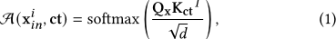

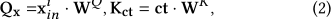
where W𝑄 ∈ R𝐷𝑚×𝐷𝑚 , W𝐾 ∈ R𝐷𝑡 ×𝐷𝑚 are the projection matrix for motion query and text key features, 𝑑 = 𝐷𝑚 represents the
(a) Pipeline

scaling factor. Within this attention score, each column A(x𝑖𝑖𝑛 , ct)∗, 𝑗 provides a correspondence between the motion sequence and the 𝑗 𝑡ℎ text token. Then the text values Vct = ct · W𝑉 are integrated within the motion sequence, via

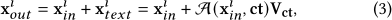
where x𝑖𝑡𝑒𝑥𝑡 denotes the text-based cross-attention feature, and x𝑖𝑜𝑢𝑡 ∈ R𝑁×𝐷𝑚 denotes the output of the 𝑖 𝑡ℎ U-Net layer.
3.2 Semantic-aware Style Adapter
Our semantic-aware style adapter serves to extract temporally dynamic style features from the input reference motions and inject these features into denoising U-Net layers.
3.2.1 Style Encoder. Considering that style may vary across different actions, we preserve its dynamic characteristics, which encompass both global and local temporal variations. For instance, the elderly individual's hunchback posture represents a global style feature, while a faltering footstep reflects a local spatial-temporal variation. Our style extraction process operates on multiple temporal scales to accurately capture global and local style features. Using a CNN network, the model first extracts style features on the original temporal scale, followed by downsampling convolutions to capture higher-level temporal style features. This process results in the formation of a pyramid of style features as cs = {cs𝑖 }𝐻 𝑖=1 , where cs𝑖 denotes the style feature from the 𝑖 𝑡ℎ convolution layer and 𝐻 represents the total number of convolution layers. Notably, the temporal scale of this pyramid aligns precisely with the corresponding feature within the U-Net, which allows us to incorporate style characteristics at the corresponding temporal level.
3.2.2 Semantic-Aware Style Injection. Building on extracted style features, the previous method [Zhong et al. 2025] utilizes ControlNet to integrate styles as temporally invariant features into the diffusion model. However, since styles are temporally dynamic, certain parts from style motions can influence specific sub-region actions in the generated motion, highlighting the need to establish a temporal correspondence between motion and style. As both poses and style fluidly change within a motion, directly establishing the correspondence is challenging. To address this, we need to map motion and style non-linearly to another feature that also fluidly changes. We found that texts can fulfill this role by mapping motions and styles into a shared encoded text space for further analysis.
Building on this idea, we first utilize the cross-attention module to capture the correspondences between the style features and the content texts, given by

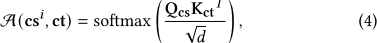

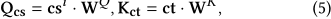
where W𝑄 ,W𝐾 are the query and key projection matrix for the style and text features, respectively. We utilize the same query and key projection matrix from the motion-text cross-attention layer to leverage the learned cross-modal correspondences. Subsequently, we deploy the temporal correspondences between content texts, motion latent, and style features to derive the attention score matrix between motion latent and style features, via

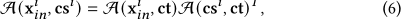

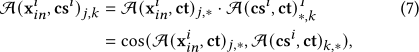
where A(x𝑖𝑖𝑛 , ct) 𝑗,∗ and A(cs𝑖 , ct)𝑘,∗ represent the attention scores between each text token with the 𝑗 𝑡ℎ motion token and the 𝑘𝑡ℎ style token, respectively, capturing the semantics of motion and style tokens. According to Eq. 7, A(x𝑖𝑖𝑛 , cs𝑖 )𝑗,𝑘 denotes the cosine similarity between the semantics of the motion and style token, serving as the attention score. A higher score indicates a stronger semantic alignment between the motion segment and the reference style segment, which will be further demonstrated in Sec. 4.
![Fig. 3. Visualization of the correlations between motion, content texts, and style. (a) The correspondences of style motion and generated motion with content texts. Both reference style motion and our generated motion are color-coded based on their attention to key content text tokens (e.g., " walks " , " sits " , and " up "). (b) Attention map between motion and style features. We highlight high-attention regions and annotate the corresponding poses in the generated motion and reference motion to illustrate their correlation.](assets/0073-picture.png)
Then, we norm the attention scores A(x𝑖𝑖𝑛 , cs𝑖 ) to maintain a standardized range of attention values, via

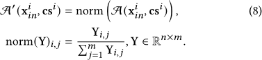
Then, the style features are integrated within the motion sequence, via

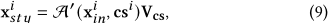
where Vcs = cs𝑖 · W𝑉 denotes the reference style value feature.
Finally, we directly add the output of the style adapter to the text-based cross-attention features, harmonizing the text and style controls. Hence, the output of the 𝑖 𝑡ℎ U-Net layer is defined as:

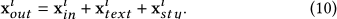
In particular, during the SASI module training, the query projection matrix W𝑄 and key projection matrix W𝐾 remain frozen, with only the value projection matrix W𝑉 trained.
3.3 Losses
In training text-conditioned diffusion model, we predict the motion with the simple objective [Tevet et al. 2023], via

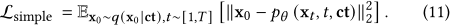
To train the style adapter, we freeze the parameters of the textconditioned diffusion model and exclusively train the style adapter using the following objective:

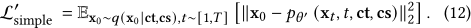
We use the notation L ′ to distinguish it from Eq. 11, with 𝜃 ′ representing the parameters of all components, as opposed to 𝜃 , which denotes the parameters of the diffusion model only. Instead of relying on style-motion pairs, we adopt a self-supervised approach that leverages the target motion x0 as the style reference. However, since the reference motion inherently contains more fine-grained motion features than the text, the network tends to prioritize extracting motion features from the reference motion. This can weaken the control exerted by the textual input, a phenomenon referred to as content-forgetting in [Zhong et al. 2025].
To mitigate this problem, we adopt two specific strategies. In the training stage, we randomly crop 50% - 75% of the motion sequence x0 as the style reference cs = crop(x0). This process lessens the overlap between the reference motion and generation target while preserving the global style wholeness and coherence. In addition, we present a hip loss function for content constraint, given by

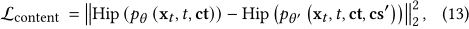
where Hip(x) denotes the hip velocity sequence of motion sample x, and cs ′ denotes a randomly selected reference motion from the training set. Drawing inspiration from the strong correlation between hip movement and contact timing discussed in [Tang et al. 2024], we introduced this loss to regulate the timing of the synthesized motion, thereby implicitly constraining the motion content. As a result, the training loss for the style adapter is defined as:

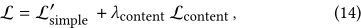
where 𝜆content is empirically set to 0.5 in our experiments. Further implementation details are provided in the Appendix.
4 Correlations Analysis between motion, content texts, and style
Our approach leverages content texts as a mediator to establish temporal correspondences between motion and style, enabling the seamless integration of style into motion. To analyze the correspondences between the generated motion, style motion, and content texts, we utilize the attention scores from Eq. 1 and Eq. 4 to colorcode the motions and key content texts with the highest attention, highlighting them in the same color inspired by the visualization in [Raab et al. 2024], as shown in Fig. 3 (a). We observe that these correspondences are semantically aligned, with the generated motion maintaining temporal alignment with the content texts.

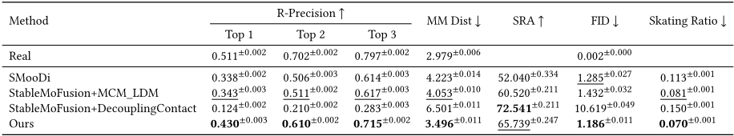
Recognized table text (check against the image)
| Method | R-Precision ↑ | MM Dist ↓ | SRA ↑ | FID ↓ | Skating Ratio ↓ | ||
|---|---|---|---|---|---|---|---|
| Top 1 | Top 2 | Top 3 | |||||
| Real | 0.511 ±0.002 | 0.702 ±0.002 | 0.797 ±0.002 | 2.979 ±0.006 | 0.002 ±0.000 | ||
| SMooDi StableMoFusion+MCM_LDM StableMoFusion+DecouplingContact Ours | 0.338 ±0.002 0.343 ±0.003 0.124 ±0.002 0.430 ±0.003 | 0.506 ±0.003 0.511 ±0.002 0.210 ±0.002 0.610 ±0.002 | 0.614 ±0.003 0.617 ±0.003 0.283 ±0.003 0.715 ±0.002 | 4.223 ±0.014 4.053 ±0.010 6.501 ±0.011 3.496 ±0.011 | 52.040 ±0.334 60.520 ±0.211 72.541 ±0.211 65.739 ±0.247 | 1.285 ±0.027 1.432 ±0.032 10.619 ±0.049 1.186 ±0.011 | 0.113 ±0.001 0.081 ±0.001 0.150 ±0.001 0.070 ±0.001 |
Additionally, our method captures the correspondences between motion features and style features via Eq. 6 and Eq. 8. The resulting attention map A ′ (x, cs), shown in Fig. 3 (b), visualizes these correlations. Notably, by using text as a mediator, the motion-style correspondences are semantically aligned. For instance, the "sit" segments in the generated motion and the style motion correspond to each other with high attention. Additionally, the stand-up action in the generated motion partially corresponds to the sit-down action in the style motion. Although the vertical speed trends of these two actions are opposite, their poses are similar, resulting in a moderate level of attention. This alignment provides two key advantages: (i) it preserves content integrity during style integration by emphasizing semantically consistent style features, ensuring that the generated motion retains temporal alignment with the content texts, and (ii) it allows distinct actions to incorporate fine-grained style characteristics that are well-matched to their semantics. For example, in the generated motion, the cross-legged characteristic is retained during sitting, consistent with the sitting actions in the style reference.
Moreover, we have observed that even when the content of the style reference and content texts are entirely mismatched, our method still extracts appropriate style features. Despite the differences in overall motion trends, specific style tokens encoding local features can still have high degrees of correspondence with certain text tokens. Additionally, some style tokens align with descriptors such as "person", representing the overall subject of the motion rather than specific actions or body parts. This alignment allows our method to incorporate overall style characteristics, such as the hunched posture traits of elderly individuals.
5 Experiments and Results
5.1 Settings
5.1.1 Dataset. We conduct experiments on theHumanML3Ddataset [Guo et al. 2022], currently the largest 3D human text-motion dataset, which includes a wide range of human motions performed by characters with diverse styles. This dataset has been widely used for both text-to-motion [Tevet et al. 2023] and motion style transfer [Song et al. 2024]. We follow the same data-splitting strategy as [Guo et al. 2022], train our diffusion model and style adapter on the train set, and evaluate our model on the test set.
5.1.2 Evaluation Metrics. We evaluate the results based on three criteria: semantic consistency, style expressivity, and motion quality. Semantic consistency is quantified through motion-retrieval precision (R-Precision) and Multimodal Distance (MM Dist), style expressivity is assessed by Style Recognition Accuracy (SRA), and motion quality is evaluated by Frechet Inception Distance (FID) and foot skating ratio. To calculate the SRA metric, we manually annotate a subset of the HumanML3D dataset with style labels and train a one-layer transformer as the style classifier. During testing, we randomly select text descriptions from the HumanML3D test set and style references from the annotated test set to generate stylized motion. Each test is evaluated 20 times, and we report the mean along with a 95% confidence interval. Details of these metrics and other settings are provided in the Appendix.
5.1.3 Baselines. We compare our method against two categories of approaches: (i) directly generating stylized motions conditioned on content texts and style motion references, and (ii) applying style transfer to motion sequences generated through a text-to-motion model. Specifically, we compare our method to SMooDi [Zhong et al. 2025] for stylized motion generation. SMooDi's adapter is trained on both the HumanML3D and 100STYLE datasets, with its classifier trained on the 100STYLE dataset, following the setup in [Zhong et al. 2025]. Additional details on the SMooDi setup are provided in the Appendix. Additionally, we use cutting-edge methods MCM_LDM [Song et al. 2024] and DecouplingContact [Tang et al. 2024] for motion style transfer, along with the state-of-the-art StableMoFusion [Huang et al. 2024] for text-to-motion. We utilize StableMoFusion+MCM_LDM to refer to a two-step pipeline: first, StableMoFusion generates motion from text, and then MCM_LDM transfers the generated motion into the desired style with respect to reference motions.
5.2 Comparisons
We conducted both quantitative and qualitative comparisons with the baseline methods. The quantitative results presented in Tab. 1 demonstrate that our method significantly enhances semantic consistency (as measured by R-Precision and MM Dist) while achieving competitive style expressivity and superior motion quality. Regarding semantic consistency, our method leverages text as a mediator to establish temporal correspondences between motion and style, integrating semantically aligned style features into motions. This Semantically Consistent Text-to-Motion with Unsupervised Styles · 7

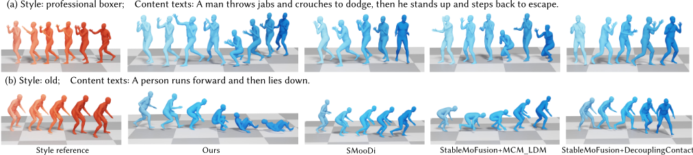
prevents content alteration during style integration, resulting in substantially better semantic alignment. Moreover, our method achieves notable style expressivity, as evidenced by the second-highest SRA scores. By adjusting the Classifier-Free Guidance weight for style, our method can surpass StableMoFusion+DecouplingContact in both semantic consistency and style expressivity, as detailed in the Appendix. SMooDi, constrained by its reliance on a supervised style classifier, struggles with unlabeled styles from the HumanML3D test set, resulting in weaker performance in these scenarios. Additionally, our method achieves the best motion quality, indicated by the lowest FID and foot skating ratio, further solidifying its effectiveness in generating high-quality motion.
We further demonstrate the effectiveness of our approach through qualitative results, as illustrated in Fig. 4. When the motion involves multiple actions, our method seamlessly integrates distinct styles into corresponding actions. For example, in Fig. 4 (a), the "throws jabs" action of our generated motion preserves the punch style of the boxer (e.g., punching skills and body dynamics), while the "crouches", "stands up" and "steps back" actions maintain the guarded posture of the boxer. Other methods, by contrast, only preserve the boxer's guarded posture and fail to capture the punch style. Even when the content of style motion diverges significantly from content texts, our method still produces compelling results. In Fig. 4 (b), for instance, our generated motion incorporates the hunched posture of an elderly person while generating motions such as "runs" and "lies down". In contrast, other methods fail to generate the "lies down" action. Additional qualitative results are available in the supplementary video.
Given that styles are subjective and most times not well defined, we conduct a user study for a more rigorous evaluation. We randomly selected ten texts and style references from the HumanML3D test set to generate motions. Sixteen participants rated the generated motions on a 1-5 scale for realism, semantic consistency, and style expressivity. Further details of the user study are provided in the Appendix. The results presented in Tab. 2 demonstrate our method's competitiveness across all criteria.
5.3 Ablation Study
In this section, we conduct ablation studies on the SASI module, content loss, and pyramid structure in the style encoder. The results of these experiments are presented in Tab. 3.

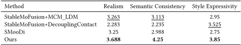
Recognized table text (check against the image)
| Method | Realism | Semantic Consistency | Style Expressivity |
|---|---|---|---|
| StableMoFusion+MCM_LDM | 3.263 | 3.113 | 2.95 |
| StableMoFusion+DecouplingContact | 2.283 | 2.235 | 3.525 |
| SMooDi | 3.25 | 2.988 | 2.75 |
| Ours | 3.688 | 4.25 | 3.85 |

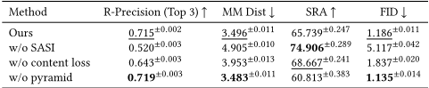
Recognized table text (check against the image)
| Method | R-Precision (Top 3) ↑ | MMDist ↓ | SRA ↑ | FID ↓ |
|---|---|---|---|---|
| Ours w/o SASI w/o content loss w/o pyramid | 0.715 ±0.002 0.520 ±0.003 0.643 ±0.003 0.719 ±0.003 | 3.496 ±0.011 4.905 ±0.010 3.953 ±0.013 3.483 ±0.011 | 65.739 ±0.247 74.906 ±0.289 68.667 ±0.241 60.813 ±0.383 | 1.186 ±0.011 5.117 ±0.042 1.837 ±0.020 1.135 ±0.014 |
5.3.1 SASI. We replace SASI module with a cross-attentionmodule for comparison, as shown in the second row (w/o SASI) of Tab. 3. The cross-attention module computes query embeddings from the motion latent and derives key and value embeddings from the reference styles, directly learning the correspondences between motion and style features through attention maps. However, this approach might result in inconsistent correspondences, which could compromise textual content consistency, leading to lower R-Precision and higher MM Dist. In contrast, our SASI module achieves notable improvements in semantic consistency and motion quality.
5.3.2 Content loss. We compare our model to a variant without content loss during training to demonstrate its effectiveness, as shown in the third row (w/o content loss) of Tab. 3. The content loss improves semantic consistency and motion quality, with only a slight impact on style expressivity.
5.3.3 Pyramid structure. We replace the style pyramid features with the final-layer output of a 3-layer CNN encoder, as shown in Tab. 3 (w/o pyramid). The pyramid structure improves SRA without notably impacting other metrics, highlighting their contribution to style expressivity.
5.4 Generalization Evaluation
To evaluate the generalization of our method, we conduct experiments in a cross-dataset setting. Specifically, we train our style adapter on HumanML3D and test it on 100STYLE, comparing it to SMooDi, which is trained on both HumanML3D and 100STYLE. The results are presented in Tab. 4. Our method demonstrates strong generalization under out-of-distribution conditions, as shown in the first row of Tab. 4 (Our adapter), achieving superior style expressivity compared to SMooDi's adapter trained on in-distribution data (SMooDi w/o classifier guidance). Since 100STYLE provides supervised styles for SMooDi, we also introduce a comparable supervised setting with classifier guidance from 100STYLE (Our adapter + classifier guidance). In this setting, our method outperforms SMooDi in style expressivity and semantic consistency, highlighting its generalization.

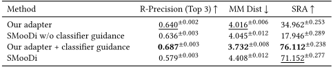
Recognized table text (check against the image)
| Method | R-Precision (Top 3) ↑ | MMDist ↓ | SRA ↑ |
|---|---|---|---|
| Our adapter SMooDi w/o classifier guidance Our adapter + classifier guidance SMooDi | 0.640 ±0.002 0.636 ±0.003 0.687 ±0.003 0.579 ±0.003 | 4.016 ±0.006 4.045 ±0.012 3.732 ±0.008 4.408 ±0.012 | 34.962 ±0.253 17.946 ±0.289 76.112 ±0.238 71.152 ±0.277 |
6 Additional Applications
6.1 Stylized Motion In-between
Stylized motion in-between is a critical research area. Without explicit style control, statistically probable motions can be used to reach target keyframes, potentially disrupting the intended style [Tang et al. 2023], as illustrated in Fig. 5 (a). To address this issue, we utilize imputation and inpainting techniques and incorporate style references to generate stylized in-between motions. When the style is derived from the keyframe sequence, the generated motion maintains the style consistency, as demonstrated in Fig. 5 (b). Additionally, our approach supports style transitions when the reference motion differs in style. For example, in Fig. 5 (d), we showcase a style transition from an "old man" walking pace to a relaxed gait.
6.2 Motion Style Transfer
Our approach enables motion style transfer, as illustrated in Fig. 6. Specifically, we employ DDIM inversion [Song et al. 2020] to determine the latent noise corresponding to the input source motion. This latent noise, along with a style reference motion and content texts, is then fed into our model to generate stylized motion. The content texts serve as a semantic prior ensuring that style features extracted from the reference motion align with the textual content, enabling our approach to better preserve the content of the original motion throughout the style transfer process.
7 Limitations, Future Work and Conclusions
If the style characteristics conflict with the content texts, our model prioritizes the content, which may limit the expression of the desired style in the generated motion. For instance, as shown in Fig. 7, when given the content texts skipping rope alongside a zombiestyle reference, our method generates motion with rope-swinging arm movements, limiting the expression of the zombie-like characteristics of arms stretched forward. Nevertheless, we contend that content control takes precedence in most practical applications. Future research could explore more flexible control mechanisms, enabling users to selectively incorporate features from the style reference while respecting the content texts.
In conclusion, we introduce a novel unsupervised style learning method that seamlessly integrates style into text-to-motion generation while maintaining semantic consistency. Leveraging text as a mediator to capture the temporal correspondences between motion and style, our style adapter effectively integrates temporally dynamic style features while preserving the diffusion model's ability to generate motions aligned with textual content. Experimental results validate that our method produces semantically consistent and expressive motions across a wide range of content texts and motion styles, outperforming state-of-the-art methods in semantic consistency and style expressivity.
Acknowledgments
Xiaogang Jin was supported by the National Natural Science Foundation of China (Grant No. 62472373) and Key R&D Program of Zhejiang (Grant No. 2024C01069).
References
Kfir Aberman, Yijia Weng, Dani Lischinski, Daniel Cohen-Or, and Baoquan Chen. 2020. Unpaired motion style transfer from video to animation. ACM Transactions on Graphics 39, 4 (2020), 1-12.
Chaitanya Ahuja and Louis-Philippe Morency. 2019. Language2pose: Natural language grounded pose forecasting. In 2019 International Conference on 3D Vision (3DV). IEEE, 719-728.
Amjad Almahairi, Sai Rajeshwar, Alessandro Sordoni, Philip Bachman, and Aaron Courville. 2018. Augmented cyclegan: Learning many-to-many mappings from unpaired data. In International Conference on Machine Learning. PMLR, 195-204.
Matthew Brand and Aaron Hertzmann. 2000. Style machines. In Proceedings of the 27th Annual Conference on Computer Graphics and Interactive Techniques. 183-192.
Armin Bruderlin and Lance Williams. 1995. Motion signal processing. In Proceedings of the 22nd Annual Conference on Computer Graphics and Interactive Techniques. 97-104.
Ziyi Chang, Edmund JC Findlay, Haozheng Zhang, and Hubert PH Shum. 2022. Unifying human motion synthesis and style transfer with denoising diffusion probabilistic models. In Proceedings of the 2023 International Conference on Computer Graphics Theory and Applications. 64-74.
Xin Chen, Biao Jiang, Wen Liu, Zilong Huang, Bin Fu, Tao Chen, and Gang Yu. 2023. Executing your commands via motion diffusion in latent space. In Proceedings of the IEEE/CVF Conference on Computer Vision and Pattern Recognition. 18000-18010.
Yuzhu Dong, Andreas Aristidou, Ariel Shamir, Moshe Mahler, and Eakta Jain. 2020. Adult2child: Motion style transfer using cyclegans. In Proceedings of the 11th Annual International Conference on Motion, Interaction, and Games. 1-11.
Chuan Guo, Yuxuan Mu, Muhammad Gohar Javed, Sen Wang, and Li Cheng. 2024a. Momask: Generative masked modeling of 3d human motions. In Proceedings of the IEEE/CVF Conference on Computer Vision and Pattern Recognition. 1900-1910.
Chuan Guo, Yuxuan Mu, Xinxin Zuo, Peng Dai, Youliang Yan, Juwei Lu, and Li Cheng. 2024b. Generative Human Motion Stylization in Latent Space. In The Twelfth International Conference on Learning Representations, ICLR 2024, Vienna, Austria, May 7-11, 2024.
Chuan Guo, Shihao Zou, Xinxin Zuo, Sen Wang, Wei Ji, Xingyu Li, and Li Cheng. 2022. Generating diverse and natural 3d human motions from text. In Proceedings of the IEEE/CVF Conference on Computer Vision and Pattern Recognition. 5152-5161.
Daniel Holden, Ikhsanul Habibie, Ikuo Kusajima, and Taku Komura. 2017. Fast neural style transfer for motion data. IEEE Computer Graphics and Applications 37, 4 (2017), 42-49.
Eugene Hsu, Kari Pulli, and Jovan Popović. 2005. Style translation for human motion. ACM Transactions on Graphics 24, 3 (2005), 1082-1089.
Lei Hu, Zihao Zhang, Yongjing Ye, Yiwen Xu, and Shihong Xia. 2024. Diffusionbased Human Motion Style Transfer with Semantic Guidance. In Proceedings of the ACM SIGGRAPH/Eurographics Symposium on Computer Animation (Montreal, Quebec, Canada) (SCA '24). Eurographics Association, Goslar, DEU, 1-12. https: //doi.org/10.1111/cgf.15169
Yiheng Huang, Hui Yang, Chuanchen Luo, Yuxi Wang, Shibiao Xu, Zhaoxiang Zhang, Man Zhang, and Junran Peng. 2024. Stablemofusion: Towards robust and efficient
diffusion-based motion generation framework. In Proceedings of the 32nd ACM International Conference on Multimedia. 224-232.
Deok-Kyeong Jang, Soomin Park, and Sung-Hee Lee. 2022. Motion puzzle: Arbitrary motion style transfer by body part. ACM Transactions on Graphics 41, 3 (2022), 1-16.
Deok-Kyeong Jang, Yuting Ye, Jungdam Won, and Sung-Hee Lee. 2023. MOCHA: Real-Time Motion Characterization via Context Matching. In SIGGRAPH Asia 2023 Conference Papers. 1-11.
Korrawe Karunratanakul, Konpat Preechakul, Supasorn Suwajanakorn, and Siyu Tang. 2023. Guided motion diffusion for controllable human motion synthesis. In Proceedings of the IEEE/CVF International Conference on Computer Vision. 2151-2162.
Boeun Kim, Jungho Kim, Hyung Jin Chang, and Jin Young Choi. 2024. MoST: Motion Style Transformer between Diverse Action Contents. In Proceedings of the IEEE/CVF Conference on Computer Vision and Pattern Recognition. 1705-1714.
Zhe Li, Yisheng He, Lei Zhong, Weichao Shen, Qi Zuo, Lingteng Qiu, Zilong Dong, Laurence Tianruo Yang, and Weihao Yuan. 2024. MulSMo: Multimodal Stylized Motion Generation by Bidirectional Control Flow. arXiv preprint arXiv:2412.09901 (2024).
Han Liang, Jiacheng Bao, Ruichi Zhang, Sihan Ren, Yuecheng Xu, Sibei Yang, Xin Chen, Jingyi Yu, and Lan Xu. 2024. Omg: Towards open-vocabulary motion generation via mixture of controllers. In Proceedings of the IEEE/CVF Conference on Computer Vision and Pattern Recognition. 482-493.
Ian Mason, Sebastian Starke, and Taku Komura. 2022. Real-time style modelling of human locomotion via feature-wise transformations and local motion phases. Proceedings of the ACM on Computer Graphics and Interactive Techniques 5, 1, 1-18.
Soomin Park, Deok-Kyeong Jang, and Sung-Hee Lee. 2021. Diverse motion stylization for multiple style domains via spatial-temporal graph-based generative model. Proceedings of the ACM on Computer Graphics and Interactive Techniques 4, 3, 1-17.
Mathis Petrovich, Michael J Black, and Gül Varol. 2022. TEMOS: Generating diverse human motions from textual descriptions. In European Conference on Computer Vision. Springer, 480-497.
Ekkasit Pinyoanuntapong, Pu Wang, Minwoo Lee, and Chen Chen. 2024. Mmm: Generative masked motion model. In Proceedings of the IEEE/CVF Conference on Computer Vision and Pattern Recognition. 1546-1555.
Katherine Pullen and Christoph Bregler. 2002. Motion capture assisted animation: Texturing and synthesis. In Proceedings of the 29th Annual Conference on Computer Graphics and Interactive Techniques. 501-508.
Sigal Raab, Inbar Gat, Nathan Sala, Guy Tevet, Rotem Shalev-Arkushin, Ohad Fried, Amit Haim Bermano, and Daniel Cohen-Or. 2024. Monkey see, monkey do: Harnessing self-attention in motion diffusion for zero-shot motion transfer. In SIGGRAPH Asia 2024 Conference Papers. 1-13.
Harrison Jesse Smith, Chen Cao, Michael Neff, and Yingying Wang. 2019. Efficient neural networks for real-time motion style transfer. Proceedings of the ACM on Computer Graphics and Interactive Techniques 2, 2, 1-17.
Jiaming Song, Chenlin Meng, and Stefano Ermon. 2020. Denoising diffusion implicit models. arXiv preprint arXiv:2010.02502 (2020).
Wenfeng Song, Xingliang Jin, Shuai Li, Chenglizhao Chen, Aimin Hao, and Xia Hou. 2023. FineStyle: Semantic-Aware Fine-Grained Motion Style Transfer with Dual Interactive-Flow Fusion. IEEE Transactions on Visualization and Computer Graphics 29, 11 (2023), 4361-4371. https://doi.org/10.1109/TVCG.2023.3320216
Wenfeng Song, Xingliang Jin, Shuai Li, Chenglizhao Chen, Aimin Hao, Xia Hou, Ning Li, and Hong Qin. 2024. Arbitrary Motion Style Transfer with Multi-condition Motion Latent Diffusion Model. In Proceedings of the IEEE/CVF Conference on Computer Vision and Pattern Recognition. 821-830.
Haowen Sun, Ruikun Zheng, Haibin Huang, Chongyang Ma, Hui Huang, and Ruizhen Hu. 2024. LGTM: Local-to-Global Text-Driven Human Motion Diffusion Model. In ACM SIGGRAPH 2024 Conference Papers. 1-9.
Xiangjun Tang, Linjun Wu, He Wang, Bo Hu, Xu Gong, Yuchen Liao, Songnan Li, Qilong Kou, and Xiaogang Jin. 2023. RSMT: Real-time stylized motion transition for characters. In SIGGRAPH '23 Conference Proceedings (August 6-10). 1-10.
Xiangjun Tang, Linjun Wu, He Wang, Yiqian Wu, Bo Hu, Songnan Li, Xu Gong, Yuchen Liao, Qilong Kou, and Xiaogang Jin. 2024. Decoupling Contact for Fine-Grained Motion Style Transfer. In SIGGRAPH Asia 2024 Conference Papers. 1-11.
Guy Tevet, Brian Gordon, Amir Hertz, Amit H Bermano, and Daniel Cohen-Or. 2022. Motionclip: Exposing human motion generation to clip space. In European Conference on Computer Vision. Springer, 358-374.
Guy Tevet, Sigal Raab, Brian Gordon, Yoni Shafir, Daniel Cohen-or, and Amit Haim Bermano. 2023. Human Motion Diffusion Model. In The Eleventh International Conference on Learning Representations. https://openreview.net/forum?id=SJ1kSyO2jwu
Munetoshi Unuma, Ken Anjyo, and Ryozo Takeuchi. 1995. Fourier principles for emotion-based human figure animation. In Proceedings of the 22nd Annual Conference on Computer Graphics and Interactive Techniques. 91-96.
Shihong Xia, Congyi Wang, Jinxiang Chai, and Jessica Hodgins. 2015. Realtime style transfer for unlabeled heterogeneous human motion. ACM Transactions on Graphics 34, 4 (2015), 1-10.
Yiming Xie, Varun Jampani, Lei Zhong, Deqing Sun, and Huaizu Jiang. 2023. Omnicontrol: Control any joint at any time for human motion generation. arXiv preprint
arXiv:2310.08580 (2023).
M Ersin Yumer and Niloy J Mitra. 2016. Spectral style transfer for human motion between independent actions. ACM Transactions on Graphics 35, 4 (2016), 1-8.
Jiaxu Zhang, Xin Chen, Gang Yu, and Zhigang Tu. 2024. Generative motion stylization of cross-structure characters within canonical motion space. In Proceedings of the 32nd ACM International Conference on Multimedia. 7018-7026.
Jianrong Zhang, Yangsong Zhang, Xiaodong Cun, Yong Zhang, Hongwei Zhao, Hongtao Lu, Xi Shen, and Ying Shan. 2023. Generating human motion from textual descriptions with discrete representations. In Proceedings of the IEEE/CVF Conference on Computer Vision and Pattern Recognition. 14730-14740.
Lei Zhong, Yiming Xie, Varun Jampani, Deqing Sun, and Huaizu Jiang. 2025. Smoodi: Stylized motion diffusion model. In European Conference on Computer Vision. Springer, 405-421.
Qiu Zhou, Manyi Li, Qiong Zeng, Andreas Aristidou, Xiaojing Zhang, Lin Chen, and Changhe Tu. 2023. Let's all dance: Enhancing amateur dance motions. Computational Visual Media 9, 3 (2023), 531-550.
![Fig. 5. Stylized motion in-between. (a) Without explicit style control, the previous diffusion method generates in-between motions that disrupt the " old man " style. (b) Our method can incorporate the style from given keyframes, preserving the style consistency of the generated in-between motions. Given a reference motion (c) with a different style (relaxed pace), (d) our method enables a style transition from an " old man " pace to a relaxed pace. All methods take keyframes and text as input for generating in-between motions. In (d), our method additionally inputs the reference motion from (c) as a style reference. Purple frames represent keyframe inputs, blue frames represent the generated motion, and orange frames represent the reference motion.](assets/0182-picture.png)

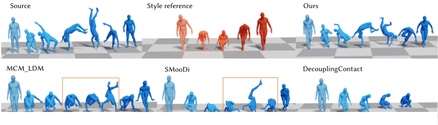
Original Figure 6 caption — reading order checked against PDF

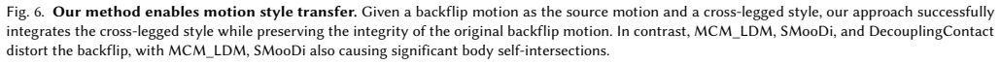

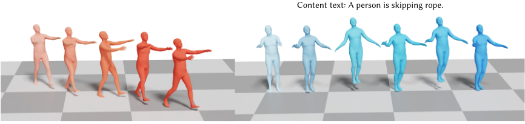
Style reference Our method
Fig. 7. Failure case: When provided with the content texts skipping rope and a zombie-like style reference, our method generates motion featuring arm movements characteristic of swinging the rope, which limits the expression of zombie-like characteristics of arms stretched forward.